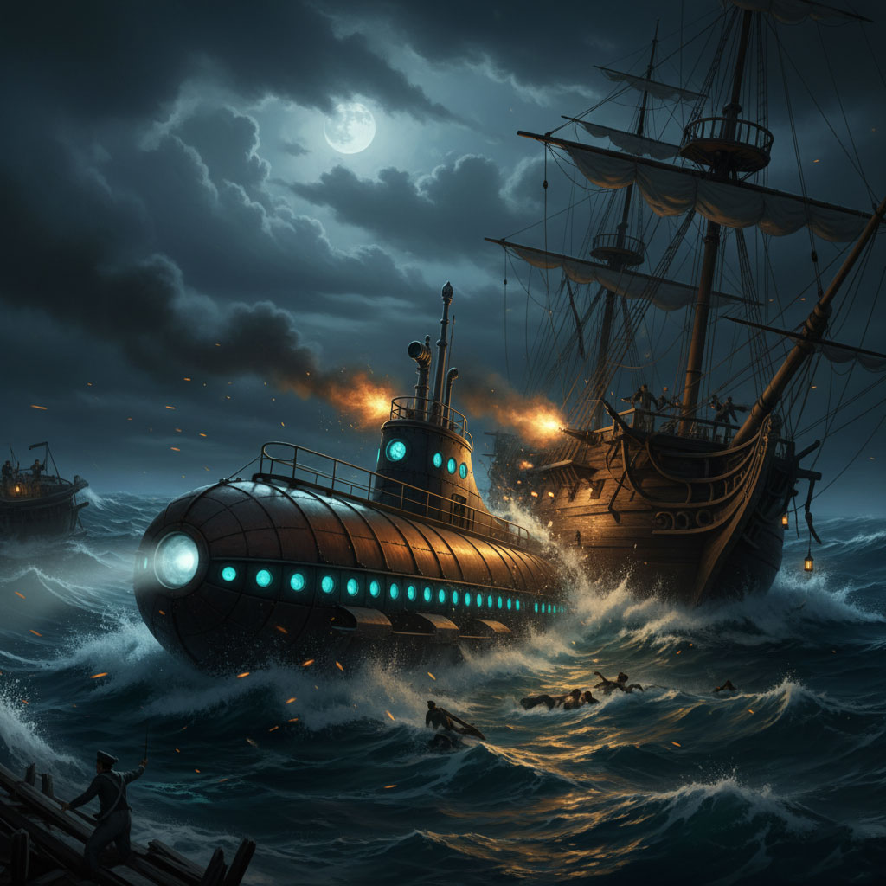
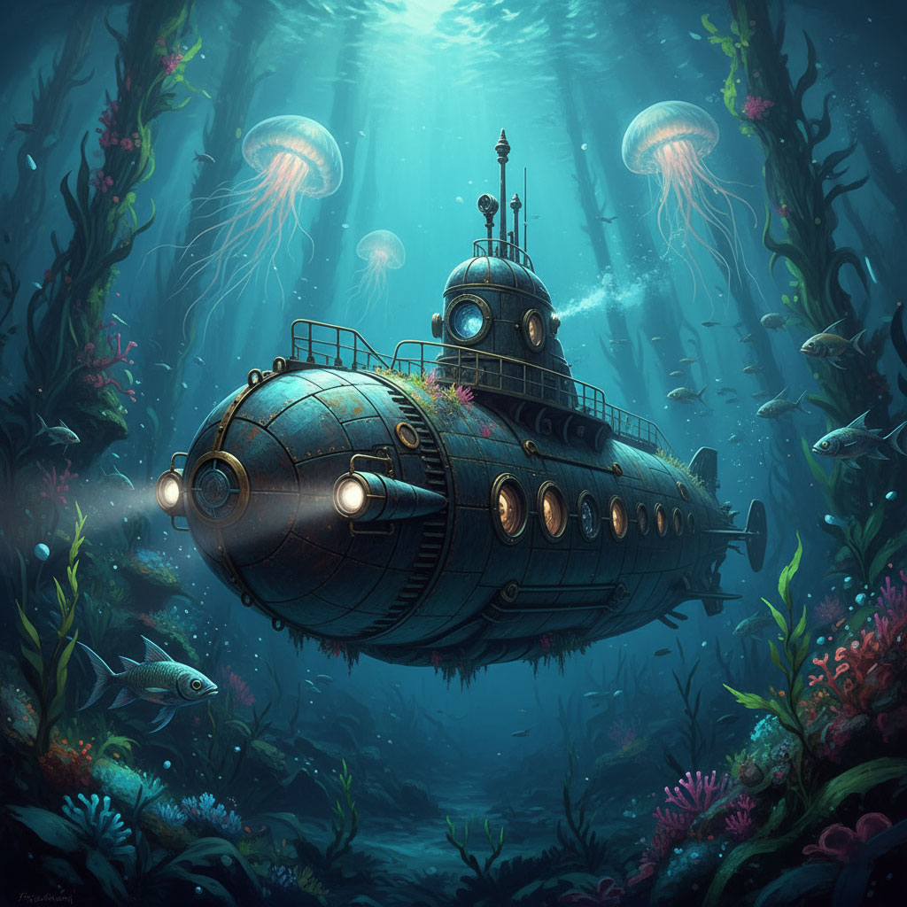
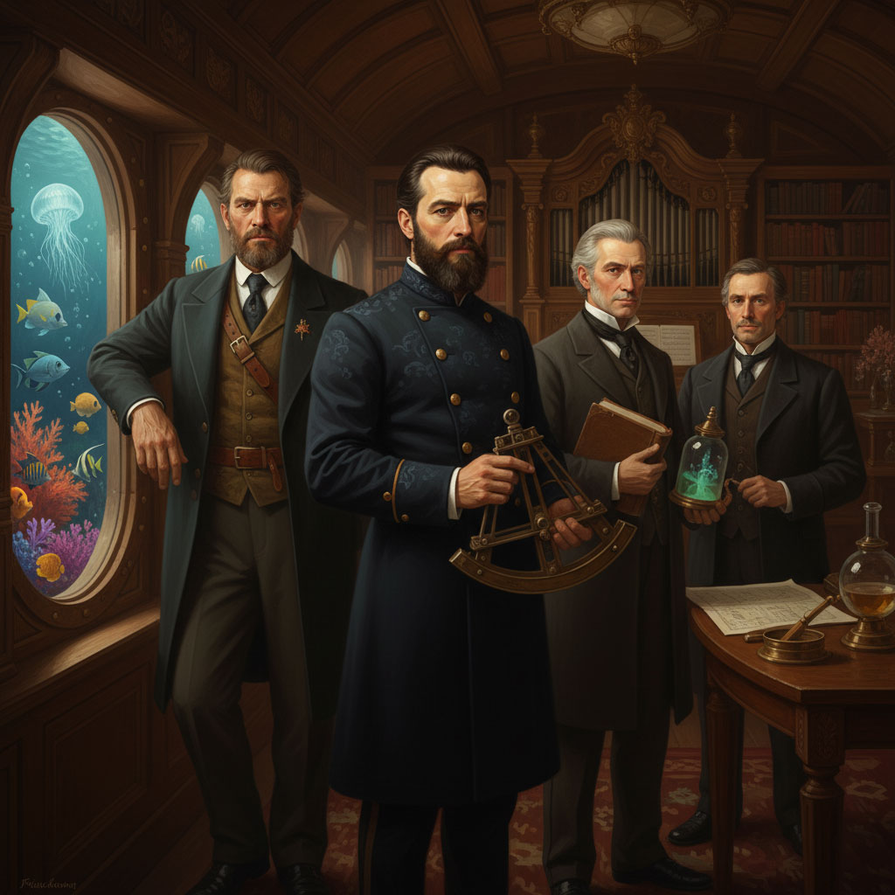

შეჯახება ურჩხულთან
რომანის მოქმედება 1866 წელს იწყება, როდესაც მსოფლიოს ზღვებსა და ოკეანეებში იდუმალი მოვლენები ხდება — გიგანტური, მანათობელი ობიექტი უდიდესი სისწრაფით გადაადგილდება და გემებს ეჯახება. საზღვაო საზოგადოება ვარაუდობს, რომ ეს აქამდე უცნობი ზღვის ურჩხულია, სავარაუდოდ, გიგანტური ნარვალი. ამ ფენომენის გამოსაკვლევად ამერიკის შეერთებული შტატები აგზავნის სამხედრო ფრეგატს, „აბრაამ ლინკოლნს“. ექსპედიციაში მონაწილეობას იღებს ცნობილი ფრანგი ბიოლოგი, პროფესორი პიერ არონაქსი, მისი ერთგული მსახური კონსელი და კანადელი მებარჯე, შეუდარებელი ნედ ლენდი. თვეების განმავლობაში ისინი უშედეგოდ ეძებენ ურჩხულს.
დატყვევება და ცხოვრება „ნაუტილუსზე“

ნაუტილუსი
საბოლოოდ, „აბრაამ ლინკოლნი“ პოულობს იდუმალ ობიექტს, თუმცა შეჯახებისას გემი ზიანდება, ხოლო პროფესორი არონაქსი, კონსელი და ნედ ლენდი წყალში ვარდებიან. ისინი აღმოაჩენენ, რომ „ურჩხული“ სინამდვილეში ფუტურისტული წყალქვეშა ხომალდია. მათ ბორტზე აჰყავთ და წარუდგენენ ხომალდის კაპიტანს — იდუმალ და გენიალურ პიროვნებას, რომელიც საკუთარ თავს ნემოს უწოდებს (ლათინურად „არავინ“). კაპიტანი ნემო მათ უცხადებს, რომ რადგან მისი საიდუმლო გაიგეს, ისინი ვერასდროს დატოვებენ ხომალდს, რომლის სახელია „ნაუტილუსი“. სანაცვლოდ, ის მათ სთავაზობს, გახდნენ არა ტყვეები, არამედ მგზავრები და შეესწრონ წყალქვეშა სამყაროს საოცრებებს.
წყალქვეშა თავგადასავლები და ნემოს საიდუმლო

ნაუტილუსის ტყვეობაში
იწყება დაუვიწყარი მოგზაურობა. პროფესორი არონაქსი აღფრთოვანებულია „ნაუტილუსის“ ტექნოლოგიური შესაძლებლობებით და იმით, თუ რას ხედავს ოკეანის სიღრმეებში. ისინი მოივლიან მსოფლიოს ყველა ოკეანეს, ნახავენ ჩაძირული ატლანტიდის ნანგრევებს, იბრძოლებენ გიგანტურ კალმარებთან, გაივლიან სუეცის არხის ქვეშ გაყვანილი გვირაბით და პირველები მიაღწევენ სამხრეთ პოლუსს ყინულის ქვეშ ცურვით. თუმცა, არონაქსი მალევე ხვდება, რომ ნემოს ბნელი მხარეც აქვს — ის დაუნდობლად ძირავს იმ ქვეყნის სამხედრო ხომალდებს, რომელიც მისი ოჯახისა და სამშობლოს განადგურებაშია დამნაშავე. ამ მოგზაურობისას მუდმივად იგრძნობა კონფლიქტი: არონაქსის ცოდნის წყურვილსა და ნედ ლენდის თავისუფლების დაუოკებელ სურვილს შორის, რომელიც მუდმივად გაქცევაზე ფიქრობს.
დასასრული: გაქცევა მორევიდან
როდესაც „ნაუტილუსი“ ნორვეგიის სანაპიროებთან აღმოჩნდება, ნედ ლენდი გაქცევის საბოლოო გეგმას შეიმუშავებს. სწორედ ამ დროს ხომალდი საშინელ ბუნებრივ მოვლენაში — მალსტრემის (მორევი) მორევში попадается (ხვდება). ქაოსითა და არეულობით სარგებლობისას, არონაქსი, კონსელი და ნედ ლენდი ახერხებენ „ნაუტილუსის“ სამაშველო ნავით გამოქცევას. ისინი გონს კარგავენ და მოგვიანებით ნორვეგიელი მეთევზეების ქოხში იღვიძებენ. კაპიტანი ნემოსა და მისი გასაოცარი ხომალდის, „ნაუტილუსის“, ბედი კი რომანის ბოლოს უცნობი რჩება.